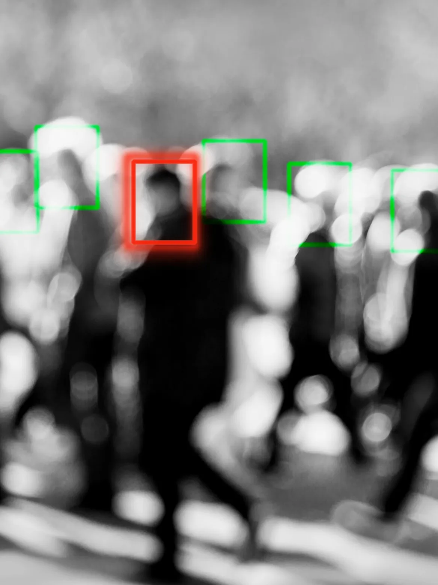

How AI Facial Recognition Technology Identifies Criminals?

Any human being is characterized by her or his distinctive identity. The face of a human being is counted to be unique along with other physical features. It is a foremost quality that enables an individual to interact with others. With science and technology improving day by day the recognition of face has gained new dimensions.
Nowadays, recognition of a face is carried out by facial recognition technology. It is an approach through which an individual is verified or identified from various digital sources, like the image or video. The face of an individual includesfacial contours which are the main source for analyzing and comparing for identification.
At the present time, the AI technology of facial recognition is comprehensively being applied for surveillance. It helps in detectingindividuals or groups that need close surveillance, usually for lawful cause.AI Facial Recognition Technology can identify criminals at the scene of an event. It can further help in recognizing those criminals who roam free. In another way, it can be a great factor to make the cities safer. This technology makes possible monitoring of real-time data. It does so by capturing an image or video and then analyzes it and identifies it.
Read More..

First case in Delhi solved with face recognition technology
TNN / Updated: Aug 4, 2020, 11:51 IST
NEW DELHI: used the used the facial recognition system to track down and arrest three criminals within hours of their dodging a police team near Pitampura
Police scanned 150 CCTV cameras and sent the feed to the crime records officer to identify the criminals using the facial recognition system. One of the bikers turned out to be Amit, a notorious snatcher, who was arrested earlier in cases of robbery.
Read More..
How Facial Recognition Is Becoming The Indian Government’s New Best Friend
Published on January 9, 2020
From hovering drones to hawk-eyed CCTV cameras, Indians by 2020 have become used to being surveilled. Facial recognition, one of the booming, yet controversial technologies, is being harnessed by the Government on a large scale.
Facial Recognition has aided in identifying the perpetrators of the JNU attack(2020), as well as screening the crowd at political rallies, identifying and apprehending criminals, and assisting the centre police in detecting terrorists and criminal elements during the celebration of Republic Day.
Read More..